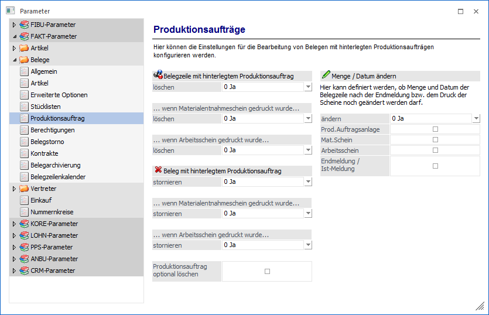
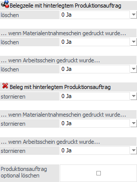
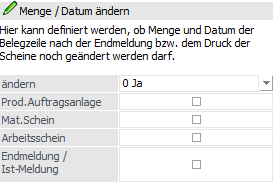

Über den Bereich "FAKT-Parameter - Belege - Produktionsauftrag" können Einstellungen für die Bearbeitung von Belegen mit hinterlegten Produktionsaufträgen vorgenommen werden.
Hinweis
Standardmäßig wird das Fenster in einem "Lesemodus" geöffnet, d.h. es können die bestehenden Einstellungen kontrolliert, Änderungen allerdings nicht durchgeführt werden. Hierfür muss zunächst mit Hilfe des Buttons "Bearbeiten" der "Bearbeitungsmodus" aktiviert werden. Alternativ kann diese Aktivierung auch über das Kontextmenü der rechten Maustaste (Funktion "Applikation xxx bearbeiten") erfolgen.

Belegzeile / Belege

An dieser Stelle können Einstellungen vorgenommen werden, die die Bearbeitung von Belegen mit hinterlegten Produktionsaufträgen regeln. Speziell geht es hierbei um das Löschen einer Belegzeile bzw. die Handhabung bei einem Belegstorno. Derzeit gelten diese Einstellungen dann, wenn eine direkte Verbindung zwischen Kunden- und Produktionsauftrag vorhanden ist (Stückliste im Beleg geöffnet).
Dabei kann eine Unterscheidung nach den folgenden Kriterien erfolgen:
ü 1. Belegzeile mit hinterlegtem Produktionsauftrag
ü 2. Belegzeile mit hinterlegtem Produktionsauftrag, wenn der Materialentnahmeschein gedruckt wurde
ü 3. Belegzeile mit hinterlegtem Produktionsauftrag, wenn der Arbeitsschein gedruckt wurde
ü 4. Beleg mit hinterlegtem Produktionsauftrag
ü 5. Beleg mit hinterlegtem Produktionsauftrag, wenn der Materialentnahmeschein gedruckt wurde
ü 6. Beleg mit hinterlegtem Produktionsauftrag, wenn der Arbeitsschein gedruckt wurde
Zur Auswahl stehen folgende Optionen zur Verfügung:
ü 0 - Ja
ü 1 - Nein
ü 2 - Fragen
Ø Produktionsauftrag optional löschen
Als weitere Option für den Belegstorno steht die Option "Produktionsauftrag optional löschen" zur Verfügung. Eine Aktivierung ist empfehlenswert unter Verwendung der Option Belegstorno "Ja", bzw. "Fragen". Mit dieser Funktion kann der Anwender ergänzend zum Belegstorno auch den Produktionsauftrag löschen.
Menge/Datum ändern

Mit diesen Einstellungen kann gesteuert werden, ob die Menge und das Lieferdatum in der entsprechenden Belegzeile für einen Produktionsauftrag (auftragsbezogene Produktion) geändert werden dürfen.
Ø ändern
Folgende Varianten stehen hier zur Verfügung:
ü 0 - Ja
Es erfolgt keine
Prüfung. Menge und Lieferdatum in der Belegzeile können geändert werden.
ü 1 - Nein
Wenn die Endmeldung
bzw. Druck des jeweiligen Scheins in der Produktion durchgeführt worden ist,
können Menge und Lieferdatum nicht mehr geändert werden.
ü 2 - Fragen
Wenn die Endmeldung
bzw. Druck des jeweiligen Scheins in der Produktion durchgeführt worden ist,
erscheint eine Bestätigungsmeldung beim Ändern der Menge bzw. des Lieferdatums.
Ø Prod.Auftragsanlage
Mit dieser Option kann das Ändern von der Menge bzw. dem Lieferdatum in der Belegzeile verhindert werden, wenn der Produktionsauftrag schon angelegt wurde.
Ø Materialentnahmeschein
Mit dieser Option kann das Ändern von der Menge bzw. dem Lieferdatum in der Belegzeile verhindert werden, wenn der Materialentnahmeschein schon ausgegeben worden ist.
Ø Arbeitsschein
Mit dieser Option kann das Ändern von der Menge bzw. dem Lieferdatum in der Belegzeile verhindert werden, wenn der Arbeitsschein schon ausgegeben worden ist.
Ø Endmeldung / IST-Meldung
Mit dieser Option kann das Ändern von der Menge bzw. dem Lieferdatum in der Belegzeile verhindert werden, wenn eine Endmeldung für den entsprechenden Produktionsauftrag schon durchgeführt worden ist.